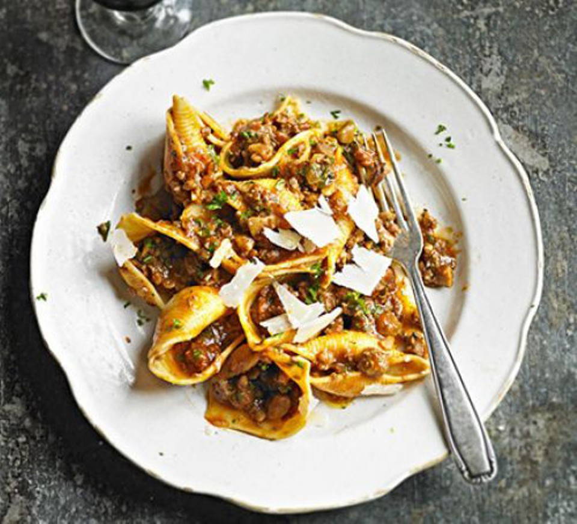

A mix of sausagemeat and chestnut chunks creates a rich and nutty pasta sauce, lifting this from an everyday dish to something special

Price : 150/-
Nutrition:
kcal
fat
saturates
carbs
sugar
fibre
protein
salt
576
23g
7g
67g
11g
3g
21g
1.7g
Ingrediants: 1 tbsp olive oil,
1 large onion , finely chopped
450g pack Lincolnshire sausage , meat squeezed out,
200g vacuum-packed chestnut from a can or jar, very roughly chopped (see tip, below)
2 garlic cloves , finely chopped
1 tsp chopped rosemary,
1 tsp fennel seed,
1 glass full-bodied red wine,
500g carton passata,
500g large pasta shells or pappardelle,
small pack curly parsley , finely chopped
parmesan or Grana Padano, to serve Method
Step 1:Heat the oil in a large frying pan, and fry the onion for 5 mins. Once starting to soften, add the sausagemeat and chestnuts, and fry for another 10-12 mins, breaking the meat up with a wooden spatula or spoon as you fry it. Keep the heat quite high and stir often.
Step 2:When the meat and chestnuts are golden brown, add the garlic, rosemary and fennel seeds, and cook for 2 mins more. Splash in the wine, let most of it boil away, then tip in the passata. Cover and simmer the sauce for 10 mins while you boil the pasta in plenty of salted water, following pack instructions.
Step 3:Reserve a cup of the pasta cooking water, then drain the pasta well. Toss the pasta, 3 tbsp of the water, the ragu and most of the parsley together, then season to taste. Share between bowls, add a grinding of black pepper, the remaining parsley, then a handful of Parmesan shavings.